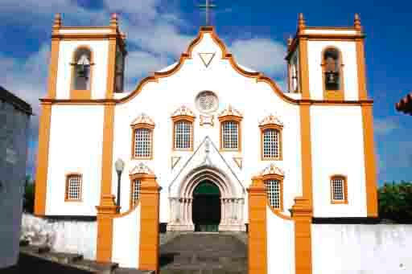
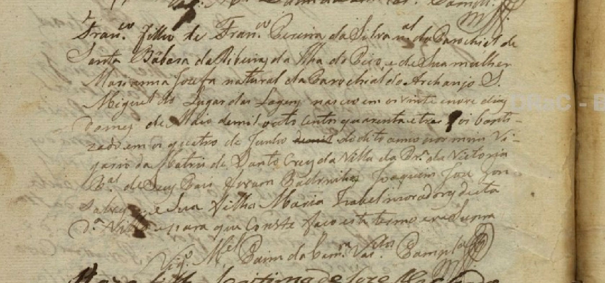
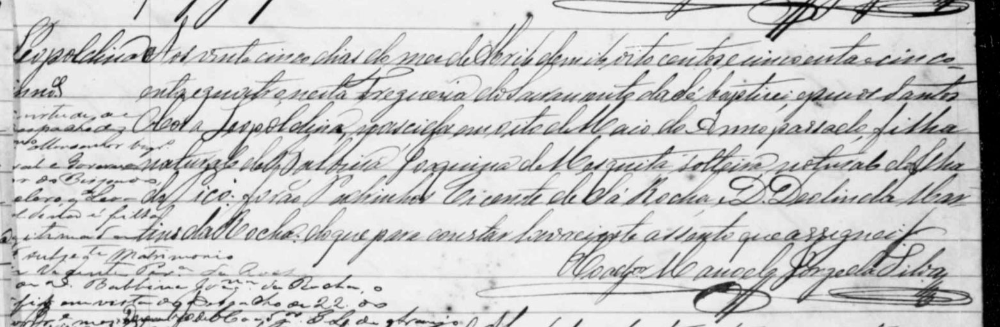
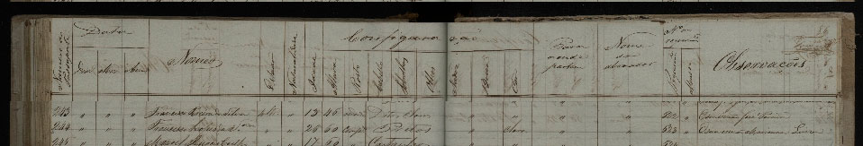
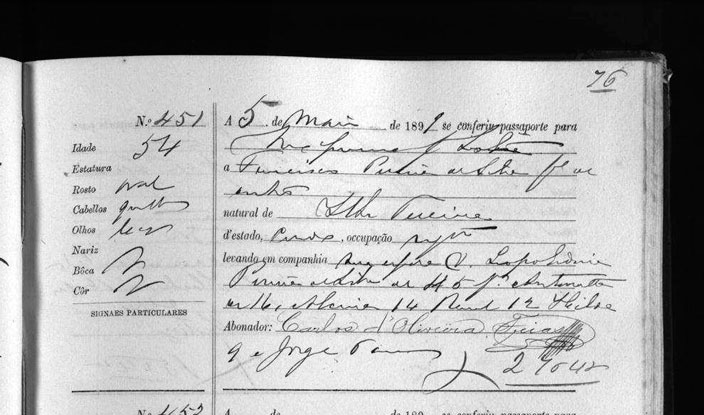
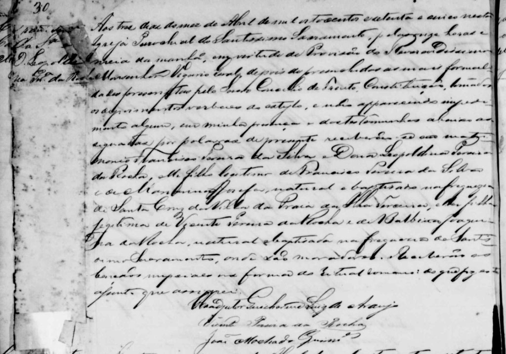
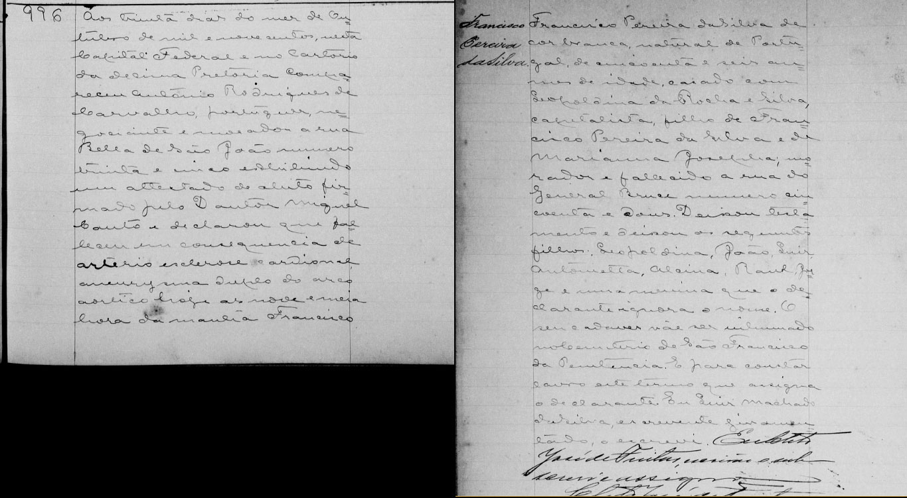
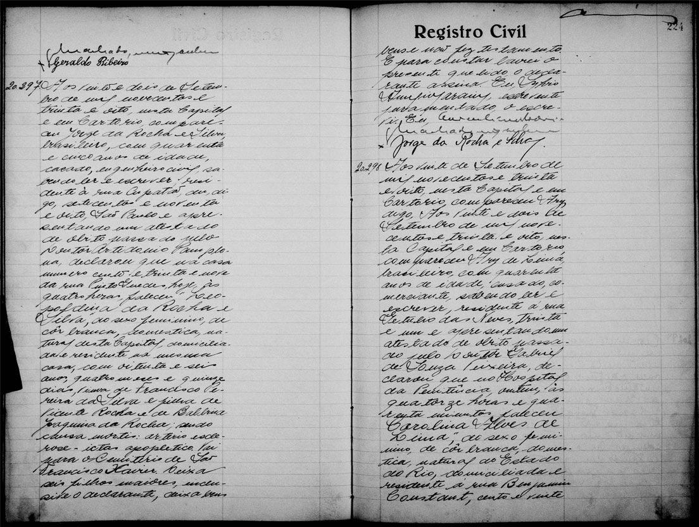

Francisco Pereira da Silva e Leopoldina Pereira da Rocha
Agora que já conhecemos os seus pais, vamos conhecê-los?!
Francisco Pereira da Silva
Praia da Vitoria – Ilha Terceira – Açores

Fonte: http://pt.wikipedia.org/wiki/Igreja_de_Santa_Cruz_%28Praia_da_Vit%C3%B3ria%29
E foi na Praia da Vitória que em 1843 nasceu Francisco, sendo batizado na Matriz de Santa Cruz da Vila da Praia, como filho de Francisco Pereira da Silva e Mariana Josefa:

Inventário Genealógico do Centro de Conhecimento dos Açores / Portal Cultura Açores
Registro de Batismo de Francisco Pereira da Silva
Francisco filho de Francisco Pereira da Silva nal da Parochia de Santa Barbara da Ilha do Pico e de sua mulher Marianna Josefa natural da Parochia do Archanjo S. Miguel do Lugar de Lagens nasceo em os vinte e nove dias do mes de Maio de mil outo centos quarenta e tres foi baptizado em os quatro de Junho do dito anno por mim Vigario da Matriz de Santa Cruz da Villa da Pra da Victoria ... de seus pais foram Padrinhos Joaquim Jose Gonsalves e sua filha Maria Isabel moradores desta da Villa...
Rio de Janeiro – RJ – Brasil

Rio de Janeiro na década de 60 do século XIX
Fonte: http://brasilianafotografica.bn.br/brasiliana/handle/bras/344
E em 1853 nascia no Rio de Janeiro Leopoldina, batizada na Igreja do Santissimo Sacramento, como filha dos portugueses Vicente Pereira da Rocha e Balbina Joaquina.

Registros da Igreja Católica Rio de Janeiro 1616-1680 – Family Search
Registro de Leopoldina Pereira da Rocha
Aos vinte e cinco dias do mês de Abril de mil oitocentos e cincoenta e quatro nesta Freguesia do Sacramento da Sé baptizei e pus os Santos Oleos a Leopoldina nascida em oito de maio do Anno passado, filha natural de Balbina Joaquina de Mesquita, solteira natural da Ilha do Pico. forão padrinhos Vicente de Sá Rocha e D. Deolinda Martins da Rocha do que para constar lavrei este assento e assignei O Conego Manoel Jorge da Silva.
AVERBAÇÃO: Encontra-se à margem esquerda da certidão a seguinte averbação: Em virtude do despacho (?) Monsenhor (?) do Bispado. Declaro q Leopoldina é filha legitima (?) por subseqte Matrimonio de Vicente Pera da Rocha e Balbina Joaqna da Rocha o fiz em vista ....
A vinda de Francisco Pereira da Silva para o Brasil
Em 1856, órfão e com 13 anos entrou com requerimento para obter o passaporte para vir ao Brasil trazendo seu irmão José, com anuência de seu tutor e marido de sua meia-irmã mais velha.

Inventário Genealógico do Centro de Conhecimento dos Açores / Portal Cultura Açores
Registro de Passaportes - Angra do Heroísmo
Quem os recebeu no Brasil ainda é uma incógnita... Provavelmente sem resposta, assim como o que aconteceu com o José.
E em 05 de maio de 1890 consta o Registro de Passaporte de Francisco Pereira da Silva, provavelmente voltando para o Brasil depois de uma viagem juntamente com Leopoldina “Pereira da Silva” e os filhos: Antonietta, Alcina, Raul, Hilda e Jorge.

Registo de Passaportes -- Porto (1899-02-27 – 1899-11-09) (Fig. 0078.tif)
Arquivo distrital do Porto
No Brasil
Quem dos bisnetos nunca ouviu de nossos pais que Francisco Pereira da Silva era Charuteiro no Rio de Janeiro?
Em 29/02/1876 foi aberto e arquivado no Tribunal de Comercio o Contrato da Empresa Charutaria Silva & Pinna de Francisco Pereira da Silva e João Francisco de Pinna (Gazeta de Noticias 29 02 1876)
O casamento:
E em 03/04/1875 Francisco Pereira da Silva se casou com Leopoldina Pereira da Rocha na Igreja do Santíssimo Sacramento

Registros da Igreja Católica Rio de Janeiro 1616-1680 – Family Search
Registro de casamento de Francisco Pereira da Silva e Leopoldina Pereira da Rocha
Aos tres dias do mês de abril de oitocentos e setenta e cinco nesta Igreja Parochial do Santissimo Sacramento pelas onze horas e meia da manhã em virtude de Provisão do Reverendissimo Monsenhor Vigário Geral depois de preenchidas as ? formalidades presentes pelo Sagrado Concílio de Trento, Constituição, tomados os depoimentos verbais ? e não apparecendo impedimento algum em minha presença e das testemunhas abaixo assignadas por palavras de presente receberão-se em matrimonio Francisco Pereira da Silva e Dona Leopoldina Pereira da Rocha, elle filho legitimo de Francisco Pereira da Silva e de Marianna Josefa natural e baptizado na freguezia de Santa Cruz da Villa da Praia da Ilha Terceira ella filha legitima de Vicente Pereira da Rocha e Balbina Joaquina da Rocha natural e baptizada na Freguezia do Santissimo Sacramento onde são moradores. Receberão as bênçãos nupciaes na forma do Ritual Romano do que fiz este assento que assignei. Coadjutor Parochiano Luiz de Araujo. Vicente Pereira da Rocha. João Machado Guimaes
Os Filhos:
Francisco e Leopoldina tiveram 9 filhos, 28 Netos e 51 bisnetos :
| Leopoldina Pereira da Silva (Tia Neném) |
| Nascimento: Rio de Janeiro 21/03/1876 |
| Batismo: 03/04/1876 Igreja do Santíssimo Sacramento |
| Padrinhos: Vicente Pereira da Rocha e Balbina Joaquina da Rocha, avós maternos |
| Primeiro Casamento: 22/05/1890 com Abílio Antônio Martins de Pinna (Vale do Cambra, Portugal 20/05/1857-?), comerciante, filho de Sebastião Antonio Martins e Anna de Jesus. Divórcio em 28/01/1900 – sem descendência Segundo Casamento: José Joaquim da Silva Abreu (Portugal 29/06/1878- Petrópolis, 21/11/19420), filho de José Joaquim d´Abreu e Olympia Maria de Jesus |
| Falecimento: Petrópolis 12/08/1939 (Certificado do Cartório de Petrópolis) |
| Filhos com José Joaquim da Silva Abreu: |
| Leopoldina (Dina) (13/10/1900-?) (Perfilhada por José Joaquim da Silva Abreu) Olympia (Portugal 15/02/02-Petrópolis 07/09/1966) Raul (1906-1939) |
| Curiosidades: Cartão de Imigração de Dina (Neta de Leopoldina) (Family Search) |
João Olavo da Rocha e Silva |
| Nascimento: Rio de Janeiro 14/01/1880 |
| Batismo: 08/02/1880 Igreja do Santíssimo Sacramento |
| Padrinhos: João Machado Guimarães e Maria José Guimarães |
| Casamento: 30/03/1902 em Rio Bonito Distrito de Valença, com Alzira da Costa Couto (Rio de Janeiro 08/11/1878-24/02/1958), filha de Antônio Joaquim da Costa Couto e Gertrudes Lopes da Cruz |
| Falecimento: Rio de Janeiro 31/05/1940 |
| Profissão: Farmacêutico e Médico Psiquiatra |
| Foi Diretor Técnico da Associação dos Empregados do Comercio (Gazeta da Tarde 03/09/1901) e posteriormente Médico do Hospital de Alienados. Entre vários artigos escreveu o livro “Evolução” com vários volumes |
| Filhos |
| Olavo Marcus (Rio de Janeiro 29/01/1903-06/08/1954), Médico Psiquiatra Lucia (Valença 19/05/1904-Rio de Janeiro 20/03/2002) Arnoldo Flavio “Nono” (Rio de Janeiro 07/07/1906-1987), Médico, Fisiologista, Professor universitário (UFRJ e UERJ) Otto Menescal (06/08/1908-27/07/1976) Engenheiro Arquiteto Mauricio Oscar (10/09/1910-19/12/1983), Médico, Farmacologista, Professor Universitário (USP) Samuel Asdrubal (Rio de Janeiro 25/11/1913-21/10/1991), Funcionário de carreira do Banco do Brasil |
Luiz da Rocha e Silva |
| Nascimento: Rio de Janeiro 31/03/1881 |
| Batismo: 19/06/1881 Igreja do Santíssimo Sacramento |
| Padrinhos: Luiz Maria Rodrigues de Carvalho e Maria Augusta Rodrigues de Carvalho |
| Casamento: com Angela Nelly Arecha (Buenos Aires 22/12/1897-?), filha de Francisco Eduardo Arecha e Margarita Camartino |
| Falecimento: Buenos Aires 03/05/1944 |
| Profissão: comerciário – Proprietário do “Café Paulista” em Buenos Aires |
| Filhos: Hilda Nelly (Buenos Aires 13/01/1920-Panamá 08/07/1958) Gilberto Luis (Buenos Aires 14/07/1923-?) |
| Curiosidades: - Hilda casou com Juan Carlos Mendivil, ambos faleceram em um acidente de avião na costa do Panamá em julho de 1958 - Cartão de Imigração Temporário de Gilberto Luis (Family Search) |
Antonieta da Rocha e Silva (Senóra) |
| Nascimento: Rio de Janeiro 29/05/1882 |
| Batismo: 10/09/1882 Igreja do Santíssimo Sacramento |
| Padrinhos: Antonio Manuel de Carvalho e Francelina Maria de Azevedo |
| Casamento: 26/07/1906 (religioso) e civil com Bernardo Ferreira Vianna (*Freguesia de São Martinho, Penafiel, Portugal 28/10/1866-Rio de Janeiro 02/09/1915) filho de José Joaquim Ferreira e Maria Magdalena |
| Falecimento: 01/09/1911 |
| Filhos: Carmen (1906-?) Dyla(16/03/1909-?) |
Alcina da Rocha e Silva |
| Nascimento: Rio de Janeiro 21/01/1885 |
| Batismo: 21/03/1886 Igreja do Santíssimo Sacramento |
| Padrinhos: Abilio Antonio Martins Pinna e protetora Nossa Senhora da Conceição |
| Primeiro Casamento: 27/07/1907 com Agenor Rocha (Rio de Janeiro 28/01/1880-?) filho de Carlos Frederico da Rocha e Maria Monteiro da Luz Evangelista Segundo Casamento: 03/09/1917 com Hermes Severiano d'Alincourt Fonseca (14/09/1877-16/01/1938), filho de João Severiano Martins da Fonseca e Anália d´Alincourt de Carvalho |
| Falecimento: 1977 |
| Filhos com Agenor Rocha:
Sylvia (1908-1998) Mario (1910-1931) Odete (12/04/1912-2010) Filhos com Hermes Severiano d'Alincourt Fonseca Alcina (20/10/1918) |
Raul da Rocha e Silva |
| Nascimento: Rio de Janeiro 30/08/1886 |
| Batismo: em 20/01/1887 Igreja do Santíssimo Sacramento |
| Padrinhos: Dr. João Coelho Barbosa e Adelia Barbosa |
| Falecimento: Rio de Janeiro 26/10/1905 |
Jorge |
| Nascimento: Rio de Janeiro 17/04/1888 |
| Batismo: 08/12/1888 |
| Padrinhos: José Bittencourt Amarante e Maria Roza Bittencourt |
| Falecimento: 1891 |
Hilda (Hylda) da Rocha e Silva |
| Nascimento: Rio de Janeiro 03/05/1890 |
| Batismo: em 01/06/1890 Igreja de São Cristóvão |
| Padrinhos: Abilio Antonio Martins de Pinna e Leopoldina Pereira da Silva de Pinna (sua irmã e seu cunhado) |
| Casamento: 10/06/1915 com Perseverando da Silva Oliveira (Rio Grande do Sul, 10/07/1888-Rio de Janeiro 08/12/1935), filho de Julio da Silva Oliveira e Maria da Conceição |
| Falecimento: 1979 |
| Filhos: Hylka (04/03/1916-?) Hylton (20/02/1918-1998) Hylda (03/07/1920-2003) Hylma (1923-27/01/1924) Hylma (1929-2009) |
Jorge da Rocha e Silva |
| Nascimento: Rio de Janeiro 19/04/1893 |
| Batismo: em 25/12/1893 Igreja do Santíssimo Sacramento |
| Padrinhos: Nicolau da Costa e Silva Lopes e Antonieta Rocha Pereira da Silva (sua irmã) |
| Primeiro Casamento: Hilda Pederneiras (1895-12/11/1918) Segundo Casamento: 15/08/1921 com Maria de Lourdes Oliveira Almeida (Rio de Janeiro 27/01/1900-1970) |
| Falecimento: São Paulo 1965 |
| Profissão: Engenheiro Civil |
| Filhos com Maria de Lourdes Oliveira Almeida
Jorge (1922-1964) Carlos Alberto (03/10/1923) Paulo Luiz (1924-27/12/2011) Henrique Oswaldo (08/01/1926) Francisco Jose (1927-1994) Maria de Lourdes (1929) |
O Falecimento
Francisco Pereira da Silva faleceu no Rio de Janeiro em 30 de Outubro de 1900

Brasil, Rio de Janeiro, Registro Civil, 1829-2012
Registro de Obito de Francisco Pereira da Silva
Aos trinta dias do mês de Outubro de mil e novecentos nesta Capital Federal e no Cartorio da Decima Pretoria compareceu Antonio Rodrigues de Carvalho, português negociante e morador a rua Bella de São João numero trinta e cinco exhibindo um attestado de óbito firmado pelo Doutor Miguel Couto e declarou que falleceu em consequência de arterio esclerose cardional aneurysma duplo do arco aórtico hoje as nove e meia hora da manha Francisco Pereira da Silva de cor branca natural de Portugal de cincoenta e seis anos de idade casado com Leopoldina da Rocha e Silva, capitalista, filho de Francisco Pereira da Silva e de Marianna Josepha, morador e falecido a rua General Bruce numero cincoenta e dous. Deixou testamento e deixou os seguintes filhos: Leopoldina, João, Luis, Antonietta, Alcina, Raul, Jorge e uma menina que o declarante ignora o nome. O seu cadáver vae ser inhumado no Cemiterio de São Francisco da Penitencia. E para constar lavro este termo que assigna o declarante. Eu Luis Machado da Silva, escrevendte juramentado o escrevi
E Leopoldina Pereira da Rocha faleceu em 22 de Setembro de 1938

Brasil, Rio de Janeiro, Registro Civil, 1829-2012
Registro de Obito de Leopoldina Pereira da Rocha (Leopoldina Pereira da Silva)
Aos vinte e dois de setembro de 1938, nesta capital e em Cartorio, compareceu Jorge da Rocha e Silva com quarenta e cinco anos de idade, casado, engenheiro civil, residente a rua Cupatão, dez, digo setecentos e noventa e oito, São Paulo e apresentando um atestado de óbito passado pelo Doutor Artidonio Pamplona declarou que na casa numero cento e trinta e nove da rua Pinto Guedes, hoje, às quatro horas faleceu Leopoldina da Rocha e Silva, do sexo feminino de cor branca, doméstica, natural desta Capital, domiciliada e residente na mesma casa, com oitenta e seis anos, quatro meses e quinze dias viúva de Francisco Pereira da Silva e filha de Vicente Rocha e de Balbina da Rocha sendo causa mortis – ictas apopletica. Vai para o Cemiterio São Francisco Xavier. Deixa seis filhos maiores, inclusive o declarante deixa bens e não fez testamento. E para constar lavrei o presente que lido o declarante assina.
Vejam todos os ancestrais de Francisco e Leopoldina